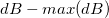
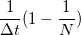
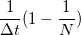
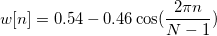

/math-1ba8aaab47179b3d3e24b0ccea9f4e30.png "x_i") ) ist eine Sequenz der Länge N, dann ist die DFT die Sequenz (
) ist eine Sequenz der Länge N, dann ist die DFT die Sequenz (/math-f67871cd00ac973d0e2b80db93f3bcd3.png "F_n") ) gegeben von
) gegeben von
Eine diskrete Fourier-Transformation (DFT) konvertiert ein Signal im Zeitbereich in seine Gegenstücke im Frequenzbereich. Angenommen, () ist eine Sequenz der Länge N, dann ist die DFT die Sequenz () gegeben von
/math-44b84261a0760528e61954194fb105bb.png "F_n=\sum_{i=0}^{N-1}x_ie^{-\frac{2\pi j}{N}ni}")
Origin verwendet eine FFTW-Bibliothek, um die Fourier-Transformation durchzuführen. Mit den transformierten Daten kann Origin die Amplitude, den Betrag und die Leistungsdichte berechnen.
In FFTW wird die Berechnung der FFT von einem ausführenden Element durchgeführt, das aus C-Code-Blöcken besteht, den so genannten "Codelets". Jedes Codelet ist für einen Teil der Transformation spezialisiert. Mit diesen Codelets implementiert das ausführende Element den FFT-Algorithmus nach Cooley-Turkey, der die Größe des Eingabesignals faktoriert. Durch rekursive Faktorzerlegung wird das Signal in kürzere Teile gebrochen. Die Ergebnisse der Transformationen der kurzen Teile werden multipliziert; schließlich wird die Transformation des ursprünglichen Signals berechnet. Weitere Informationen zu FFTW finden Sie unter http://fftw.org/.
Definitionsgemäß kann die Leistungsdichte oder das Spektrum mit der folgenden Gleichung berechnet werden:
wobei die Autokorrelationsfunktion des Eingabesignals ist.
Wir haben jedoch eine endliche Anzahl von Stichproben für das Eingabesignal. Daher ist das Berechnen des Leistungsspektrums mit der Definition nicht möglich, da nur bestimmte Methoden verwendet werden können, um das Leistungsspektrum zu schätzen. Die in Origin verwendete Methode ist das Periodogramm, das die Leistung aus der Amplitude der transformierten Fourier-Daten schätzt. Während allgemein anerkannt wird, dass die quadratische Amplitude proportional zur Amplitude des Leistungsspektrum ist, existieren zahlreiche Konventionen zum Beschreiben der Normierung des Leistungsspektrums in jeder Domäne. Die drei Beschreibungen, die Origin verwendet, sind die "mittlere quadratische Amplitude" (MSA), die "Summe der quadratischen Amplitude" (SSA) und das "Zeitintegral der quadratischen Amplitude" (TISA). Sie können wie folgt ausgedrückt werden:
wobei /math-ee3b649c91bbd9dec3819b3f5481c130.png "Re\,\!") und
und /math-b51fd3509fe55c0eedb0147d08bdbf8f.png "Im\,\!") die realen und imaginären Teile der transformierten Daten darstellen;
die realen und imaginären Teile der transformierten Daten darstellen; /math-baa52b85c066dbd5eeff3c078a69205b.png "n\,\!") ist die Länge der Eingabesequenz;
ist die Länge der Eingabesequenz; /math-80c473f1c5ffddd8f4ec87f62dc50209.png "\Delta t\,\!") ist das Abtastintervall.
ist das Abtastintervall.
Das Leistungsspektrum kann entweder einseitig (einzelseitig) oder zweiseitig (doppelseitig) sein, abhängig davon, ob Zweiseitig (2) oder Einseitig (1) für Spektrumstyp (st) ausgewählt ist. Zum Berechnen einer einseitigen Leistungsdichte ist es erforderlich, zuerst die zweiseitige Leistungsdichte zu berechnen. Das Ergebnis wird dann mit Hilfe der folgenden Gleichungen in das einseitige Leistungsspektrum konvertiert:
/math-7bce1e1b9a6be59860ec46e258c91cd1.png "P_s(i)=P_d(i),i=0\,\!")
wobei /math-31778efa2cc67bd5c807be00488cba96.png "P_s(i)\,\!") das einseitige Leistungsspektrum und das zweiseitige Leistungsspekrum ist.
das einseitige Leistungsspektrum und das zweiseitige Leistungsspekrum ist.
Wenn eine Fensterfunktion angewendet wird, wird das Leistungsergebnis zum Ausgleich mit einem Faktor multipliziert, der definiert ist mit :
/math-363eaa9c63ea87cd48ba42fdf880175e.png "N/{\sum_{n=0}^{N-1}w(n)^2}") , wobei
, wobei /math-4f1e95fe0a7a8e27f3b50dd3fc160462.png "w(n)") die unten definierte Fensterfunktion ist.
die unten definierte Fensterfunktion ist.Origin kann den Betrag, die Phase, die Amplitude und weitere Eigenschaften der transformierten Daten berechnen. Es wird angenommen, dass und die realen und imaginären Teile der transformierten Daten sind und die Größe des Eingabesignals ist. Verwenden Sie , um das Abtastintervall darzustellen. Angenommen, die Variable norma ist auf 0 gesetzt (Normierung wird nicht verwendet). Weitere Ausgaben werden mit den folgenden Formeln berechnet:
| Spektrumstyp ist zweiseitig (i=1-n/2 ~ n/2) |
Spektrumstyp ist einseitig (i=0 ~ n) |
|
|---|---|---|
|
Phase |
|
|
|
Betrag |
|
|
| Amplitude |
|
|
|
dB |
|
|
|
Normierte Amplitude in dB |
 |
|
|
RMS-Amplitude |
||
Die oben stehenden Berechnungen basieren tatsächlich auf der Annahme, dass die Variable norma auf falsch gesetzt ist. Wenn diese Variable auf wahr gesetzt ist, werden die komplexen, realen und imaginären Ergebnisse sowie die Ergebnisse von Betrag und quadratischem Betrag normiert. Beachten Sie, dass Phase, Leistung, Amplitude, normierte Amplitude, db und quadratischer Amplitude nicht von der Variable norma beeinflusst werden.
Wenn Zweiseitig (2) für Spektrumstyp (st) ausgewählt und Normieren (norma) auf wahr gesetzt ist, werden die komplexen, realen und imaginären Ergebnisse sowie die Ergebnisse für Betrag und quadratischem Betrag durch /math-a957404c96e59f1746f97ab668c8e1f8.png "n\,") geteilt, wobei die Größe des Eingabesignals ist.
geteilt, wobei die Größe des Eingabesignals ist.
Wenn Einseitig (1) für Spektrumstyp (st) ausgewählt und Normieren (norma) auf wahr gesetzt ist, werden die komplexen, realen und imaginären Ergebnisse folgendermaßen normiert. Angenommen, /math-4d30e4daa217409c00a4232ebdb923a1.png "res_s'\,") ist das normierte Ergebnis:
ist das normierte Ergebnis:
/math-a5652bda282e618ec59b68074eb5790f.png "res_s'(i) = \begin{cases} res_s(i)/n, & \mbox{if } i=0 \\ 2*res_s(i)/n, & \mbox{otherwise} \end{cases}")
Das automatisch berechnete Abtastintervall ist das durchschnittliche Inkrement der Zeitsequenz, die normalerweise aus der X-Spalte kommt, die mit dem Eingabesignal verbunden ist. Gibt es keine verbundene X-Spalte, werden die Zeilennummern verwendet. Beachten Sie, dass das Abtastintervall auf 1 gesetzt wird, wenn Origin das durchschnittliche Inkrement nicht erhält.
Frequenz
Die Frequenzspalte wird durch das Abtastintervall  und die Anzahl der Eingabedatenpunkte N erstellt. Das n-te Frequenzdatum ist gegeben durch:
und die Anzahl der Eingabedatenpunkte N erstellt. Das n-te Frequenzdatum ist gegeben durch:
/math-8763f1f56d63a872fd52fda663147678.png "f_n=\frac n{N\Delta t}")
Wenn es N Eingabedatenpunkte gibt, hat der Frequenzbereich ebenfalls N Punkte mit der maximalen Frequenz, /math-4329ba377dc00cf706e49f696f7238de.png "f_{\max }\,\!") gleich. Ist die Option Ergebnis verschieben nicht aktiviert, wird die Transformation von 0 bis angezeigt. Ansonsten wird die verschobene Transformation von bis
gleich. Ist die Option Ergebnis verschieben nicht aktiviert, wird die Transformation von 0 bis angezeigt. Ansonsten wird die verschobene Transformation von bis /math-e8556cbd67b2e41e95b7cbc74d5fdd96.png "\frac{f_{\max }}2") angezeigt.
angezeigt.
Fenster werden zum Unterdrücken von Verlusten verwendet. Verschiedene Fenstertypen werden in Origin wie folgt definiert.
/Mini_bulb.png) |
In den untenstehenden Gleichungen ist |
Rechteckiges Fenster:
![w[n]=1\,\!](../images/Algorithm_(FFT1)/math-0ea6c517a0282283a8ebbdd2525f1713.png "w[n]=1\,\!")
Welch-Fenster:
![w[n]=1-\left( \frac{n-\frac 12(N-1)}{\frac 12(N+1)}\right) ^2](../images/Algorithm_(FFT1)/math-36c370ad4c40cff081352cd6c147f4bf.png "w[n]=1-\left( \frac{n-\frac 12(N-1)}{\frac 12(N+1)}\right) ^2")
Dreieckiges Fenster:
Ungerade:
Gerade: /math-8e83f30fc0b782e1d8b13c070ff8819d.png "w(n)=\frac 2N(\frac N2-|n+1-\frac {N+1}2|)")
Bartlett-Fenster:
/math-825eb9c392e4c816f626392c7bd01c1b.png "w(n)=\frac 2{N-1}(\frac{N-1}2-|n-\frac{N-1}2|)")
Hanning-Fenster:
![w[n]=\frac 12[1-\cos (\frac{2\pi n}{N-1})]](../images/Algorithm_(FFT1)/math-8f823e6c7622542b06faa1579d56e96a.png "w[n]=\frac 12[1-\cos (\frac{2\pi n}{N-1})]")
Hamming-Fenster:

Blackman-Fenster:
![w[n]=0.42-0.5\cos (\frac{2\pi n}{N-1})+0.08\cos (\frac{4\pi n}{N-1})](../images/Algorithm_(FFT1)/math-d1c1de031af458564cd1fdf389d5fa25.png "w[n]=0.42-0.5\cos (\frac{2\pi n}{N-1})+0.08\cos (\frac{4\pi n}{N-1})")
Gaussian-Fenster:
![w[n]=exp(-0.5(Alpha( \frac{2n}{N-1}-1 ))^2) \,\!](../images/Algorithm_(FFT1)/math-fab7a042f67f1dfb6dc5556e228508ec.png "w[n]=exp(-0.5(Alpha( \frac{2n}{N-1}-1 ))^2) \,\!")
Kaiser-Fenster:
![w[n]=I(beta*\sqrt{1-(\frac{2n}{N-1}-1)^2}) / I(beta) \,\!](../images/Algorithm_(FFT1)/math-04b7bbeb549a0b1d5ee22e3d50305676.png "w[n]=I(beta*\sqrt{1-(\frac{2n}{N-1}-1)^2}) / I(beta) \,\!")
/math-ad64609096818ed7ccb8b3d4ba0f7ab6.png "\arctan (\frac{Im}{Re})\,")
/math-c1ece0acf285e8b40cf88b80e8282cfa.png "\sqrt{Re^2+Im^2}\,")
/math-492e800da9c3c4b1292f0a0bea063f0d.png "\sqrt{Re^2+Im^2}/n\,")
/math-13a921e0253cc1827e37d9ff186d9278.png "\sqrt{Re^2+Im^2}/n, i=0\mbox{ or }i=n/2\,")
/math-ea3686f5a52c473b0e14137f2542b7aa.png "20log(Amplitude)\,")
/math-7b8b965ad4bca0e41ab51de7b31363a1.png "n") der Datenindex und
der Datenindex und /math-8d9c307cb7f3c4a32822a51922d1ceaa.png "N") die Gesamtanzahl des Datensatzes.
die Gesamtanzahl des Datensatzes.